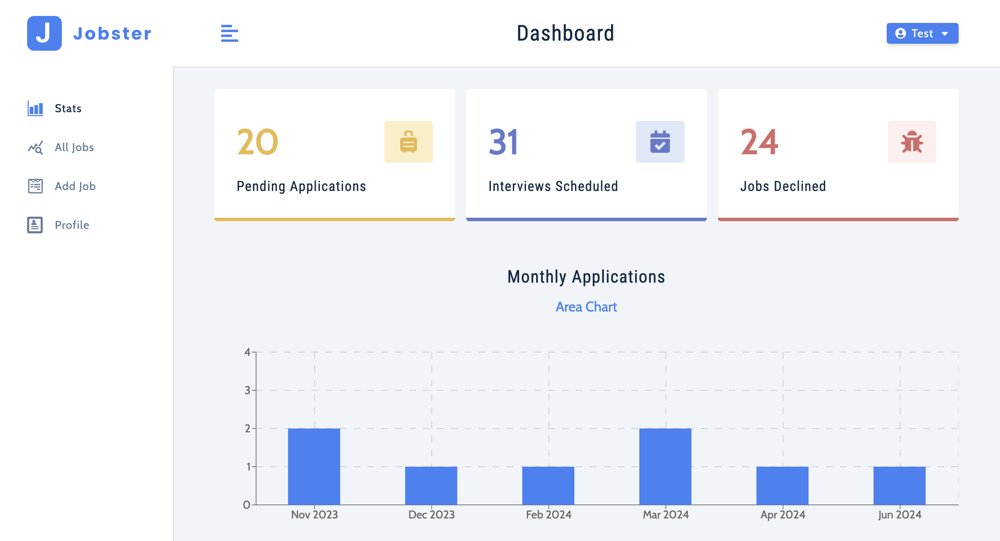
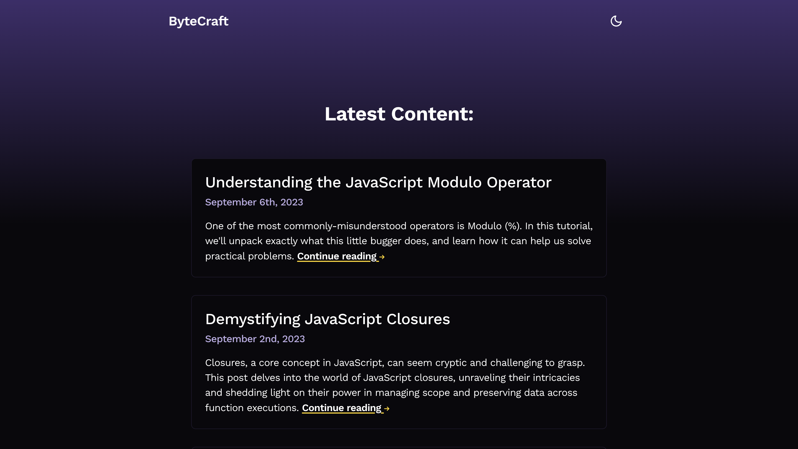
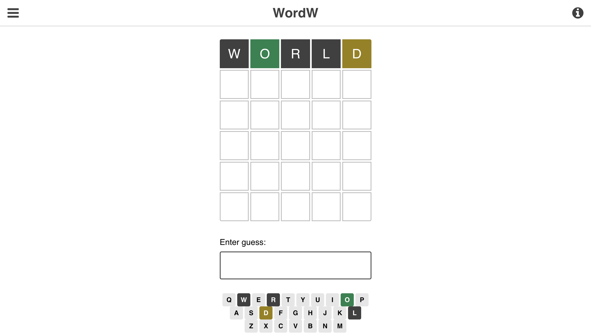
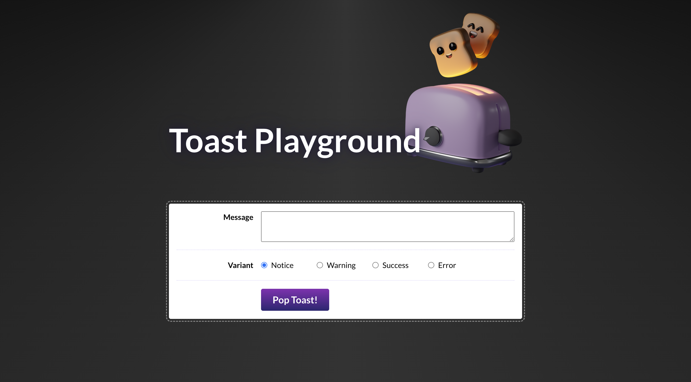

Jobster API

The Jobster API is a platform that enables users to manage all their job applications. It offers robust user authentication features, and advanced searching and filtering capabilities, utilizing React on the frontend and Express.js on the backend to provide a seamless user experience.
Note: Since this is hosted for free on Render, it takes around a minute to load after 15 minutes of inactivity.
ByteCraft
ByteCraft is a responsive full-stack blog created using Next.js and React, providing a seamless user experience with server-side rendering. It includes interactive animations and transitions implemented with Framer Motion, enhancing the blog's visual appeal and user engagement. It features a flawless dark mode toggle with persistent user settings using cookies and cookie libraries, ensuring a consistent experience across sessions. Only the first article (Understanding the Javacript Modulo Operator) is tailored to, the others are generated purely to fill out the blog using ChatGPT.
View ProjectWordW
WordW is a React-based word puzzle game inspired by Wordle. It features an on-screen keyboard that visually represents user inputs with color-coded feedback, and several difficulty levels to enhance player engagement.
View ProjectToast
Custom toast component implemented with React. It features multiple UX enhancements, such as the dismissal of all toasts by pressing the Escape key.
View Project